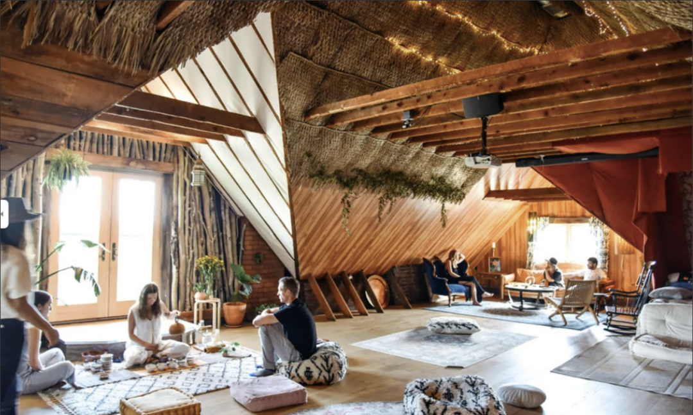

Ethereum leads the development of decentralized applications and fuels the evolution of blockchain technology. In recent years, the Ethereum community has frequently hosted events to facilitate communication among blockchain enthusiasts worldwide.
ETH Denver is the world's largest and longest-running Ethereum community event. This year's ETH Denver will be held from February 24 to March 5, 2023. You may be ready to fly to North America for an enthusiastic Web3 party in the cold winter!
As a digital polis dedicated to connecting digital nomads, SeeDAO would like to offer you a couch and a warm space in cold Denver to sit down and talk about the network state, digital nomads, and DAO. It will be an open, egalitarian, and impromptu Unconference. Any member interested in these topics is welcome to come to our DAO&Digital Normad House and come along to share experiences and opinions in the discussion.
活动详情
Details of the event
活动时间：2 月 27 日，下午2：00-5:00 （Denver当地时间）Time: February 27, 2:00-5:00 p.m. (MST)
活动地点：2345 7th St, Denver, CO 80211 （Jefferson park 附近）Location: 2345 7th St, Denver, CO 80211
报名链接：https://lu.ma/kdy6l782Please register through the following link. If the registration is approved, we will send you an email: https://lu.ma/kdy6l782
为了让27号的下午能够有一场轻松愉快的社区对谈，我们将场地选在了一个靠近Denver市中心的木屋里。这间木屋能够容纳五十人，拥有舒适的沙发，并配置了许多瑜伽垫。对远途旅行和线下social感到疲惫的小伙伴来说，你可以来这里放松身心，参加一次Chill、放松的线下聚会。The cabin can accommodate up to fifty people, has comfortable couches, and is equipped with many yoga mats. For those of you who are tired of traveling long distances and need a cozy space, you can come here to relax and unwind for a Chill, relaxing gathering.会场是允许携带小型宠物的，请大家放心把自己的小小家庭成员带来一起玩耍~Small pets are allowed, so please feel free to bring your little family members here~SeeDAO 将在会场给大家提供饮料和小食。除此之外，SeeDAO发起人白鱼还准备了十本书，准备在活动现场和送给大家。想要获得赠书的朋友千万不要错过这次活动~SeeDAO will provide drinks and snacks for the event. In addition, WhiteFish, the promoter of SeeDAO, will bring 10 favorite books to share with everyone at the event. Don't miss this event if you want to receive a book recommended by WhiteFish!
Let’s Share!
Let’s Share!
Let's share！
你可以分享最近读过的有意思的书，数字游民体验和DAO内经历，又或者是分享喜欢的零食和手工制品。很多时候，DAO 像一锅石头汤，是来参加 DAO 的活动的小伙伴们给 DAO 添加的各类食材让 DAO 慢慢变成了香气四溢的佛跳墙。SeeDAO 欢迎各位小伙伴和我们一起在寒冷的丹佛一起熬煮这碗佛跳墙。Let’s share! You can share exciting books you've read recently, digital nomad experiences and experiences within DAO, or share your favorite snacks and handicrafts. Let's make the cold winter warmer by sharing.友情提示：这些人会来到线下与大家一起share他们的观点和见闻。This is part of the speaker of the event.
白鱼，SeeDAO发起人WhiteFish, the promoter of SeeDAO
作为SeeDAO的治理架构师，白鱼将与大家一起聊聊“DAO 的实践和治理”。他将分享他在SeeDAO为期15个月的治理实践以及SeeDAO五个版本的治理体系演进。除此之外，他还会和大家一起讨论中心化与去中心化、DAO成员的激励和Owenership、DAO的游戏化等DAO经典治理问题。As the governance architect of SeeDAO, White Fish will talk about "DAO Practice and Governance." He will share his 15-month-long governance practice at SeeDAO and the evolution of SeeDAO's governance system in five versions. In addition, he will also discuss classic DAO governance issues such as the relationship between centralization and decentralization, how to motivate DAO members, how to evoke the ownership of DAO members, and the gamification of DAO.
唐晗，SeeDAO发起人Han Tang, the promoter of SeeDAO
在过去半年游历了全球6个国家、10个城市之后，唐晗将分享她作为数字游民的观察：**“从 DAO 到网络国家” 。**她将带来对在土耳其游荡的俄罗斯数字难民的观察，并从社会学观察的角度分享Web3将对人类生活和组织带来的实际变化，和大家一起探讨为什么“网络国家”是未来趋势。After traveling to 6 countries and 10 cities around the world in the past 6 months, Tang Han will share her observations as a digital nomad in the speech named "From DAO to the Network State." She will share her observations of Russian digital refugees wandering in Turkey, the practical changes that Web3 will bring to human life and organizations from a sociological perspective, and why "the network state" is the future trend.
Livid，创意工作者社区V2EX.com的创建者，Founder of planetable.xyzLivid, Founder of planetable.xyz, creator of V2EX.com
Livid将为大家分享 “网络社会与协作工具的变迁史“ 。 回溯web2 到 web 3 工具的演变，上至世界上最早的服务器，下至今日流行的nostr，为大家翻开web archive，呈现平台从中心化到去中心化的变迁历程。Livid will share the "History of the evolution of web society and collaboration tools." Retracing the evolution of web2 to web3 tools, from the world's earliest servers to today's popular nostr, we will review the web archive and present the evolution of the platform from centralized to decentralized.
Anssen，BAYC社区OGAnssen, OG of BAYC community作为BAYC社区的深度参与者，Anssen 将与大家分享自己是如何在 Yuga Lab 的项目中获得与网络国家类似的游戏体验的，并和大家一起探讨游戏化和机制化是否可以促进 web 3 citizen 们的互动，个人主权和商业模式的结合是否是重要的未来需求。As a deep participant in the BAYC community, Anssen will share how he got a similar gaming experience in Yuga Lab's project as in the network state and discuss with the audience whether gamification and mechanization can facilitate the interaction of web3 citizens and whether the combination of personal sovereignty and business models is a significant future need.
除此之外，原瓦猫之夏大会的组织者、大理DAOSpace的发起人jiang也会为我们带来他对DAO与线下空间的故事分享。In addition, jiang, the organizer of the Summer of Wamo Conference and the initiator of Dali DAOSpace, will also bring us his story about DAO and offline spaces.如果你也有兴趣和大家分享你在DAO的体验，作为数字游民的体验，或是对网络国家的看法，请点击以下链接报名：https://lu.ma/kdy6l782If you are also interested in sharing your experience at DAO, your experience as a digital nomad, or your thoughts on the network state, please register by clicking on the following link: https://lu.ma/kdy6l782在线下会场之外，SeeDAO 还在Twitter Space开设了线上会场，欢迎未能来到 Denver 的数字游民小伙伴们加入我们的讨论。Besides the offline venue, SeeDAO has also opened an online venue at Twitter Space, where fellow digital nomads who could not come to Denver are welcome to join our discussion.SeeDAO 已经把会客厅布置好了，数字游民朋友们，一起在丹佛度过一个愉快的午后吧。SeeDAO has already set up the couch. Join us for a fun afternoon in Denver, fellow digital nomads.
致谢
Acknowledgements
致谢本次活动的赞助方DRK Lab。DRK Lab是一家专注于Web3领域的投资孵化机构，致力于帮助有才华、践行长期主义价值观的创业者，共同建设一个有机的 Web3 世界。Thanks to our sponsor, the DRK Lab, a Web3-focused incubator dedicated to helping talented entrepreneurs who practice long-term values and try to build an organic Web3 world together.如果您也想赞助这场活动，请添加微信号ycbreakfree 沟通联系。让我们一起为Denver的冬日下午呈现一场美好的线下聚会。If you would like to sponsor this event, don't hesitate to get in touch with us on Twitter@yc4971. Let's have a fantastic party in Denver's winter afternoon.